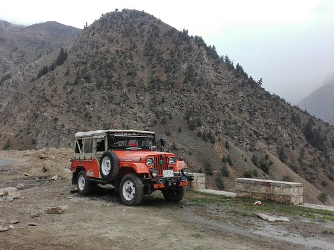
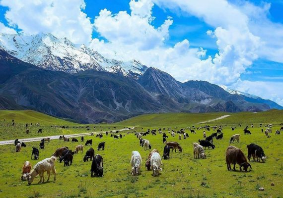
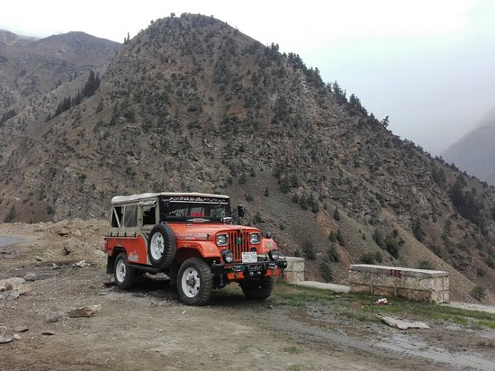
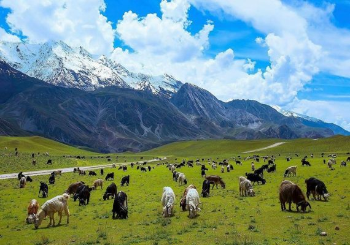

Travel To Northern Pakistan
Travelling is most enjoyable hobby.Pakistan's Northern Areas are best for this purpose.
If you
are interested in travelling to any country please visit the website here.
Travelling is most enjoyable hobby.Pakistan's Northern Areas are best for this purpose.
If you
are interested in travelling to any country please visit the website here.
Here is short detail of beautiful palces in Northern Pakistan
The Hunza Valley, nestled in the breathtaking landscapes of northern Pakistan, is a true paradise on Earth. With its mesmerizing beauty and enchanting charm, it captivates the hearts of all who visit. This idyllic valley is surrounded by majestic mountains.
Kashmir is a region known for its breathtaking natural beauty. It is surrounded by the Himalayas and offers stunning landscapes, including snow-covered mountains, lush valleys, serene lakes, and picturesque meadows.
Swat Valley is a scenic valley located in the Khyber Pakhtunkhwa province. It is often referred to as the "Switzerland of the East" due to its stunning natural beauty. Swat is famous for its lush green meadows, gushing waterfalls, crystal-clear lakes.
Naran Kaghan is a popular tourist destination in the northern areas of Pakistan. It is located in the Mansehra District of Khyber Pakhtunkhwa province. The area is famous for its scenic beauty, including the Kunhar River, lush green valleys, pine forests.
Gilgit is the capital city of the Gilgit-Baltistan region in northern Pakistan. Nestled in the Karakoram mountain range, it is surrounded by towering peaks, glaciers, and the mighty Indus River. Gilgit is known for its vibrant cultural heritage.
Chitral is a picturesque valley located in the Khyber Pakhtunkhwa province of Pakistan. It is renowned for its stunning landscapes, snow-capped mountains, and glistening rivers. Chitral is home to diverse ethnic communities, including the Kalash people
Here are the some beautiful palces


 



It was a woderful experience travelling with Explore. I really enjoyed throughout the whole trip. They provide excellent services. Kudos!!!!
It was a woderful experience travelling with Explore. I really enjoyed throughout the whole trip. They provide excellent services. Kudos!!!!
It was a woderful experience travelling with Explore. I really enjoyed throughout the whole trip. They provide excellent services. Kudos!!!!
It was a delightful experience.A wonderful trip with friends and family. Truly satisfied.